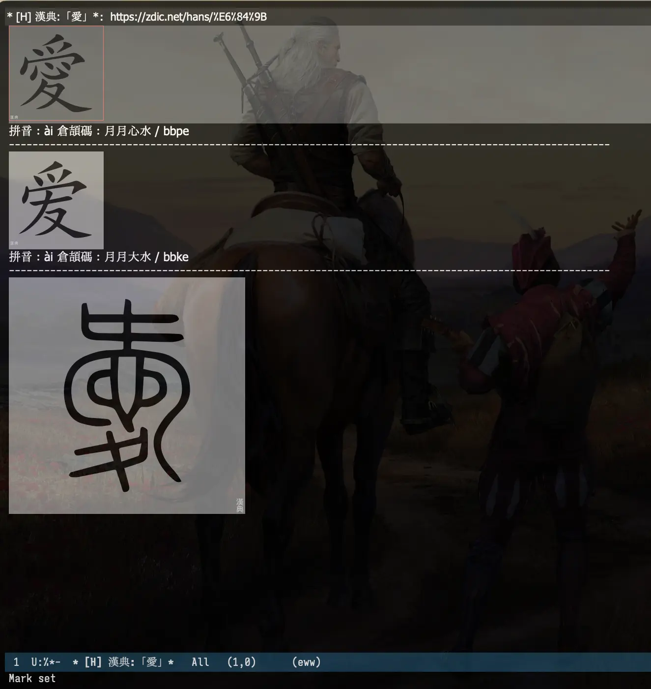

在 Emacs 中用漢典查詢倉頡碼
倉頡輸入法 我已經用了很長時間，通過強迫自己在日常中使用，現在日常打字已經沒什麼問題。我最近寫的文章都是用䌓體，是因為倉頡打繁體更容易，而且我也喜歡繁體字 (繁體字更容易反映字形，從而更好的理解一個字的含義)。不過我的用法可能有點怪，現在用䌓體的更多是香港、澳門和臺灣的人，他們的用字有各自的習慣偏好，但由於我不了解，我大多時候只是將簡體字換成䌓體字，但我想閱讀起來應該也沒什麼問題。或許有的讀者閲讀䌓體會有點困難，我只能說聲抱歉了。
儘管常用字基本會打了，但還是會有一些字不知道怎麼打，有的字我不知道對應的繁體是什麼，這時我會用 漢典 去查。
我有兩種用法，一種是利用 Zen 瀏覧器的快捷查詢 (Shortcut)，我綁定在了 @h ，在我需要查一個字時，例如「倉」，我就在 Zen 瀏覧器的搜索框中輸入 @h 倉 就可以跳到漢典查詢。

另一個用法是在 Emacs 裡 (我用 Emacs 寫博客，在 Emacs 裡打字是最多的)，我將漢典的連結寫進了 webjump 裡，webjump 的功能和 Zen 瀏覧器的快捷查詢是類似的，也可以自定義查詢，通過 M-x webjump 就能調用。更方便的做法是將 webjump 綁定在 embark 上，embark 相當於 Emacs 中的右鍵菜單，這樣我可以選中一個字後，通過 embark 調用 webjump，然後選擇漢典進行查詢。關於這部分的設定可以看 Emacs: 封装 webjump 搜索 symbol-at-point。
這兩種方法本質上都是跳轉到漢典查詢，只是調用的入口不同，我也用了很長一段時間。但漢典頁面的信息太多了，很多信息是我不關心的，而我比較關心的倉頡碼在頁面底部，每次都要滾動到底部才能看，有點麻煩。前陣子在 Blaugust 2026 Feeds - 以及我是如何用 Elisp 製作的 中我學會了如何在 Emacs 中抓取一個頁面的 HTML，并用 Emacs 內置的 dom.el 处理 HTML 中的元素，於是我想，我也可以用相同的方法去抓取漢典的 HTML，只保留那些我關心的內容，然後在 Emacs 的 buffer 裡展示，這樣在 Emacs 中查字時會更方便。
折騰了好一會儿，我已經實現了，功能的大體邏輯是這樣的：
- 從選中的區域 (region) 或用戶輸入获取要查詢的字
- 拼接漢典的查詢連結： https://zdic.net/hans/%E5%AD%97
- 用 plz.el 發起請求，获取到頁面的 HTML
- 用 dom.el 获取我需要的信息：字的圖片、拼音、倉頡碼、對應的簡體或䌓體的圖片、倉頡碼、說文解字中的文字圖片 (用於了解字的原始形狀)
- 將信息拼裝好，用 Emacs 內置的瀏覧器 EWW 展示，這是因為組裝好的信息也是一份 DOM tree，適合用瀏覧器來渲染，同時如果想看原始頁面，也可以在 EWW 中用
eww-browse-with-external-browser把 URL 用外部瀏覧器打開
源碼
;;; init-handian.el --- 用漢典查詢漢字的倉頡碼 -*- lexical-binding: t -*-
;;; Commentary:
;;; Code:
(require 'plz)
(require 'dom)
(require 'cl-lib)
(require 'eww)
(require 'url-util)
(require 'subr-x)
(defcustom spike-leung/handian--url "https://zdic.net/hans/"
"漢典 URL."
:type 'string)
(defvar spike-leung/handian--cangjie-char-table
(let ((tbl (make-char-table nil)))
(pcase-dolist (`(,key . ,val)
'((?a . "日") (?b . "月") (?c . "金") (?d . "木") (?e . "水") (?f . "火") (?g . "土")
(?h . "竹") (?i . "戈") (?j . "十") (?k . "大") (?l . "中") (?m . "一") (?n . "弓")
(?o . "人") (?p . "心") (?q . "手") (?r . "口")
(?s . "尸") (?t . "廿") (?u . "山") (?v . "女") (?w . "田") (?y . "卜")
(?x . "難") (?z . "重")))
(aset tbl key val))
tbl))
(defun spike-leung/handian--convert-to-cangjie-char (cangjie-code)
"將倉頡碼轉成倉頡字母 abc -> 日月金.
CANGJIE-CODE 是倉頡碼."
(mapconcat (lambda (code)
(or (aref spike-leung/handian--cangjie-char-table code)
(char-to-string code)))
(string-to-list cangjie-code)))
(defun spike-leung/handian--char-url (char)
"漢典 URL，拼接上要查詢的 CHAR."
(concat spike-leung/handian--url (url-hexify-string char)))
(defun spike-leung/handian--img-with-bg (img)
"把 IMG 包進一個淺色背景的 span，避免暗色主題看不清黑字."
(when img
`(span ((style . "background-color: #fff;"))
,img)))
(defun spike-leung/handian--variants-p (dom)
"判斷是否在「繁体」或「简体」.
DOM 是頁面文檔的 DOM 樹."
(let ((variants (dom-by-class dom "char-card__variants")))
(and variants
(let ((text (dom-texts variants)))
(or (string-match-p "繁体" text)
(string-match-p "简体" text))))))
(defun spike-leung/handian--variants (dom)
"获取字的「繁体」或「简体」，查詢其倉頡碼，返回對應的 DOM.
DOM 是頁面文檔的 DOM 樹."
(when (spike-leung/handian--variants-p dom)
(let* ((variants (dom-by-class dom "char-card__variants"))
(link (dom-by-class (car (dom-by-tag variants 'ul)) "variant-link"))
(variant-char (dom-attr link 'title)))
(spike-leung/handian--query-char variant-char t))))
(defun spike-leung/handian--swjz-img (dom)
"荻取「說文解字」部分的圖片.
DOM 是頁面文檔的 DOM 樹."
(let* ((swjz (dom-by-id dom "swjz")))
(list (car (dom-by-tag swjz 'img)))))
(defun spike-leung/handian--build-document (dom url &optional is-variant)
"構建顯示的結果.
URL 是漢典的 URL，字作為查詢參數.
DOM 是頁面文檔的 DOM 樹.
如果 IS-VARIANT 是 nil，則額外查詢一次這個字對應的「繁体」或「简体」."
(let* ((glyph-img (dom-by-id dom "glyph-img"))
(pinyin (dom-text (dom-by-class dom "meta-pinyin")))
(info-extra (dom-by-class dom "char-card__info-extra"))
(cangjie (nth 3 (dom-by-tag info-extra 'span)))
;; 查詢原字時，額外查詢其變體；如果是查詢的是變體則不需要額外查詢其變體，否則就循環了。
(swjz-img (unless is-variant (spike-leung/handian--swjz-img dom)))
(variants (unless is-variant (spike-leung/handian--variants dom))))
(append (list 'base (list (cons 'href url))
(spike-leung/handian--img-with-bg glyph-img)
'(span nil "拼音：") pinyin
'(span nil "倉頡碼：")
`(span nil ,(concat (spike-leung/handian--convert-to-cangjie-char (dom-texts cangjie)) " / " )) cangjie
'(hr nil))
(and variants (list variants))
`(,(spike-leung/handian--img-with-bg swjz-img)))))
(defun spike-leung/handian--query-char (char &optional is-variant)
"向漢典發起請求，得到返回的 HTML，解析成 DOM，并構建用於顯示的 DOM.
CHAR 是要查詢的漢字.
如果 IS-VARIANT 是 nil，則額外查詢一次這個字對應的「繁体」或「简体」."
(let* ((url (concat "https://zdic.net/hans/" (url-hexify-string char)))
(dom (plz 'get url
:as (lambda () (libxml-parse-html-region (point-min) (point-max)))
:then 'sync)))
(spike-leung/handian--build-document dom url is-variant)))
(defun spike-leung/handian--display (char document)
"用 EWW 展示查詢結果.
CHAR 是要查詢的漢字.
DOCUMENT 構建好的用於展示的 DOM，格式要合 EWW 要求的格式."
(let* ((url (spike-leung/handian--char-url char))
(buf-name (format "* [H] 漢典:「%s」*" char))
(buf (get-buffer-create buf-name)))
(with-current-buffer buf
(eww-mode)
(plist-put eww-data :url url)
(plist-put eww-data :title buf-name))
(pop-to-buffer buf)
(eww-display-document document nil buf)
(eww--after-page-change)))
(defun spike-leung/handian--query (char)
"用「漢典」(`spike-leung/handian--url') 查詢漢字 CHAR.
顯示漢字的簡體和繁體，它們的拼音和倉頡碼等信息。
結果使用 `eww-mode'，
可以在結果 buffer 中用 `eww-browse-with-external-browser' 打開原網站查閱更多信息."
(interactive
(list
(let ((s (if (use-region-p)
(string-trim
(buffer-substring-no-properties (region-beginning) (region-end)))
(read-string "輸入要查詢的漢字: "))))
(if (> (length s) 1)
(user-error "「%s」含多個字，僅接受單一漢字" s)
s))))
(setq deactivate-mark t)
(let ((document (spike-leung/handian--query-char char)))
(spike-leung/handian--display char document)))
(provide 'init-handian)
;;; init-handian.el ends here
上面的代碼可能更新不及時，最新的可以看 init-handian.el。
{kind=link}

使用時，有几種用法：
- 直接調用
spike-leung/handian--query，輸入要查詢的字查詢 - 在 Emacs 中選中一個字後，調用
spike-leung/handian--query查詢 將
spike-leung/handian--query綁定到 embark 中，在 Emacs 中選中一個字後，調用 embark 的快捷鍵查詢 (我最常用的方法)我的相關配置
embark-act 綁定在 C-.，然後 將 spike-leung/handian–query 綁定到 embark-region-map，快捷鍵是 H。這樣，在選中一個字後，就可以用 C-. 喚起 embark，再按一下 H 就會調用
spike-leung/handian--query查詢漢典并顯示相關信息。(use-package embark :hook (after-init . embark-auto-prefix-help-mode) :diminish embark-auto-prefix-help-mode :after (vertico) :bind (("C-." . embark-act) ("M-." . embark-dwim) ("C-h B" . embark-bindings)) ;; alternative for `describe-bindings' :config (keymap-set embark-general-map "W" #'spike-leung/webjump-symbol-at-point) (keymap-set embark-region-map "W" #'spike-leung/webjump-symbol-at-point) (keymap-set embark-region-map "H" #'spike-leung/handian--query) (add-to-list 'vertico-multiform-categories '(embark-keybinding grid)) (setq prefix-help-command #'embark-prefix-help-command embark-auto-prefix-help-delay 1.5 ;; 默認不彈出 Embark Actions 菜單，可以通過 C-h 喚醒 embark-indicators '(embark-minimal-indicator embark-highlight-indicator embark-isearch-highlight-indicator)))
查詢的結果會在一個 buffer 中打開，設置成了 eww-mode ，打開時這個 buffer 是激活狀態，此時按 q (quit-window) 可以關閉 buffer；按 & (eww-browse-with-external-browser)
可以用外部瀏覧器打開原始頁面，查看更詳細的信息。
功能對我來說挺方便的，也够用了，如果你也在 Emacs 中使用倉頡輸入法，希望對你有所帮助 :)